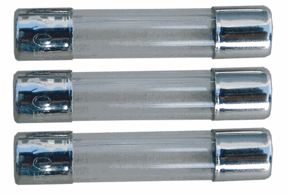
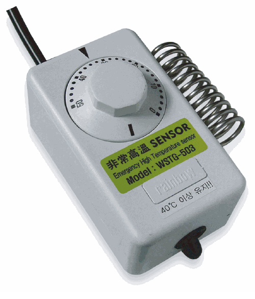
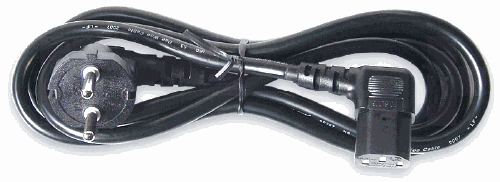
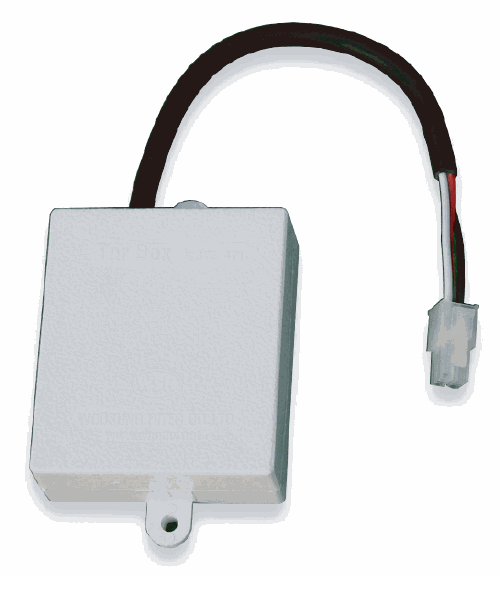
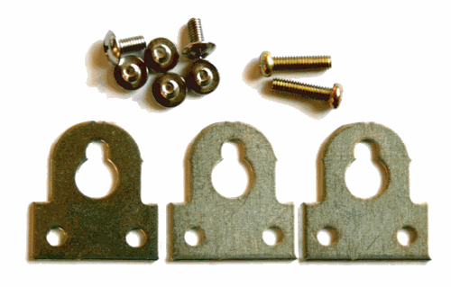
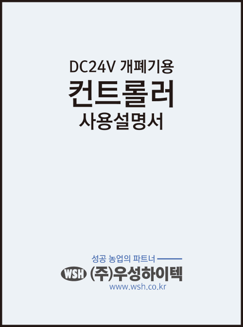

| 모델 | 최대 연결 |
|---|---|
| WSDT-502 | 2대 |
| WSDT-504 | 4대 |
| WSDT-506 | 6대 |
| WSDT-508 | 8대 |
| WSDT-5012 | 12대 |
| WSDT-5016 | 16대 |
| WSDT-5020 | 20대 |
| WSDT-5024 | 24대 |
WSDT시리즈
매일 정해진 시각에 자연환기창을 열고 닫는 1채널 시간 자동 컨트롤러입니다.
제어 시간 자동채널 1채널출력 DC24V설정 10분 단위열림·닫힘 시각, 스텝횟수와 작동제한 시간을 설정합니다.
WSDT시리즈그린하우스 타이머 컨트롤러
핵심 제어 요약
OPEN09:30설정한 시각에 자동 열림↓CLOSE19:20설정한 시각에 자동 닫힘열림시간과 닫힘시간을 설정하면 매일 같은 시각에 환기창을 자동으로 열고 닫습니다.
핵심 기능 카드를 눌러 장점과 확장 방법을 확인하세요.
제품 사양과 핵심 설정
- 입력전압
- AC220V 60Hz
- 출력전압
- DC24V(±10%)
- 호환 개폐기
- 50W: WSM-4035(소비전류 2A 이하) / 100W: WSM-6035(소비전류 4A 이하)
- 표시방식
- FND 디지털 표시
- 운전방식
- 자동운전 또는 개별 수동운전
- 제어방식
- 디지털 타이머에 의한 시간제어
- 작동방식
- 열림·복귀·스텝작동
- 안전기능
- 단락 작동 시 분할되감기 및 잠자기 기능
- 안전장치
- 서모스타트에 의한 고온 비상 작동
출력 용량을 먼저 확인하십시오
50W 출력 모델은 WSM-4035, 100W 출력 모델은 WSM-6035를 기준으로 합니다. 연결 대수뿐 아니라 사용하는 전동개폐기의 소비전류에 맞춰 출력 계열을 선택해야 합니다.
이런 시설에 적합합니다온도와 관계없이 매일 일정한 시각에 환기창을 열고 닫아야 하는 시설에 적합합니다. 설정한 시간은 한 채널에 공통으로 적용되므로, 연결된 개폐기들은 모두 같은 열림·닫힘 시각에 함께 운전합니다.
MODEL LINEUP출력 용량·연결 대수별 모델 구성＋
사용하는 전동개폐기의 소비전류에 맞춰 50W 또는 100W 출력을 먼저 선택한 후 필요한 최대 연결 대수를 확인하십시오.
| 모델 | 최대 연결 |
|---|---|
| WSDT-1002 | 2대 |
| WSDT-1004 | 4대 |
| WSDT-1006 | 6대 |
| WSDT-1008 | 8대 |
100W 출력은 최대 8대 연결 모델까지 생산됩니다.
※ 최대 연결 대수는 전동개폐기 수량 기준입니다.
TIME & STEP SETTING시간·스텝·작동제한 설정＋
1. 현재시각24시간제로 맞춤
›2. 열림·닫힘10분 단위 설정
›3. 스텝횟수1~8회 또는 oF
›4. 열림 제한1~30분 설정
설정 버튼을 누를 때마다 현재시각 → 열림시각 → 닫힘시각 → 스텝횟수 → 작동제한 순서로 이동합니다. 열림은 설정한 제한시간, 닫힘은 고정 30분이 지나면 잠자기 상태로 들어갑니다.
AUTO & MANUAL자동운전과 개별 수동운전＋
자동 선택설정 시각에 전체 라인 운전
›개별 스위치자동 중 해당 라인 정지 가능
›수동 선택각 라인을 직접 열림·정지·닫힘
자동운전 전에 현재시각과 열림·닫힘 설정값을 확인하십시오. 개별 스위치를 중앙의 정지 위치로 두면 자동운전 중에도 해당 라인은 작동하지 않습니다.
TROUBLESHOOTING점검 및 문제 해결＋
증상을 선택하면 확인 순서와 조치 방법이 펼쳐집니다. 전기 작업 전에는 반드시 전원을 차단하십시오.
컨트롤러가 켜지지 않는다전원·차단기·퓨즈 확인＋
- 전기가 정상적으로 공급되는지 확인합니다. 정전이면 작물 피해 방지를 위한 응급조치를 합니다.
- 누전차단기와 전원차단기 스위치가 ON인지 확인합니다.
- 퓨즈가 끊어졌는지 확인하고, 끊어졌다면 반드시 규정 용량의 새 퓨즈로 교환합니다.
누전차단기가 내려온다배선 누전·내부 손상 확인＋
- 컨트롤러 전원을 완전히 끈 상태에서도 차단기가 내려가면, 연결 전선의 피복이 벗겨져 금속 파이프나 구조물에 닿았는지 확인합니다.
- 컨트롤러 전원을 켤 때 차단기가 내려가면 내부 누전 또는 과부하·과전압에 의한 부품 손상 가능성이 있습니다.
작물 피해 방지를 위한 응급조치 후 내부를 임의로 분해하지 말고 당사에 연락하십시오.
퓨즈가 계속 끊어진다퓨즈 용량·합선·과부하 확인＋
- 퓨즈 양 끝의 표시를 보고 규정 용량인지 확인합니다.
- 모든 개별 스위치를 정지에 놓아도 끊어지면 컨트롤러 내부 고장 가능성이 있습니다.
- 특정 개폐기를 작동할 때만 끊어지면 출력 단자부터 개폐기까지의 합선, 개폐기 고장 또는 과부하를 확인합니다.
큰 용량의 퓨즈로 임의 교체하지 마십시오. 내부 고장이 의심되면 당사에 연락하십시오.
전동개폐기가 반대로 회전한다출력극성 확인＋
전동개폐기의 구동축 회전방향과 출력극성이 맞지 않은 경우입니다. 전원을 차단한 후 해당 개폐기의 전선 두 가닥을 서로 바꾸어 연결하고 열림·닫힘 방향을 다시 확인합니다.
자동운전이 되지 않는다선택스위치·시간·개별 정지 확인＋
- 자동·수동 선택스위치가 상향의 자동 위치인지 확인합니다.
- 현재시각과 열림·닫힘 시간이 올바르게 설정되어 있는지 확인합니다.
- 개별 스위치가 중앙의 정지 위치인 라인은 자동운전에서도 작동하지 않습니다.
수동운전이 되지 않는다수동 선택·개별 스위치 확인＋
- 자동·수동 선택스위치가 하향의 수동 위치인지 확인합니다.
- 운전하려는 라인의 개별 스위치가 중앙의 정지 위치인지 확인하고 열림 또는 닫힘으로 조작합니다.
열리기만 하고 닫히지 않는다서모스타트 설정온도 확인＋
서모스타트 주변 온도가 설정온도보다 높으면 고온 특별작동이 적용되어 닫힘이 실행되지 않을 수 있습니다. 주변 온도와 서모스타트 설정온도를 확인하고 현장 조건에 맞게 설정합니다.
INCLUDED PARTS기본 제공 부품＋

예비퓨즈
컨트롤러 출력 회로 보호용

서모스타트
비상고온 감지와 작물 보호 운전에 사용

전원코드
컨트롤러 AC 전원 연결용

TNR 박스
개폐기 작동 시 발생할 수 있는 과전압 완화

설치 부품
컨트롤러 고정용 브래킷과 체결부품

사용설명서
향후 종이 설명서를 제품 QR 코드로 확인하는 디지털 설명서로 대체할 예정입니다.